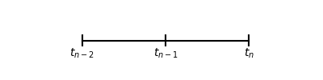

We discussed more general Backward Differentiation Formulae (BDF). In particular BDF2, a second order approximation of the first derivative.
- Tasks
- Daniel
- Sage
- Backward Differentiation Formulae (BDF Schemes)
- References
The next meeting is scheduled for Thursday June 14th at 2 pm.
Tasks
Daniel
- Test using second degree polynomial terms.
- Test with points projected off of a circle.
- Fine tune parameters for the QR approach and the PInv approach.
- Explore how the rank changes as $\alpha \to 0^+$.
- Implement RBF-FD.
Sage
- Debug the steady-state diffusion equation on the sphere. Test for accuracy.
- Research sphereical harmonics
- Test steady-state diffusion on a sphere against known solutions using spherical harmonics.(Sample MATLAB Code)
- Test time-stepping code with BDF2.
Backward Differentiation Formulae (BDF Schemes)
Backward Euler is the simplest BDF scheme (BDF1). The second simplest is BDF2, a second order backward approximation to the first derivative. It can be derived using Taylors theorem as follows.
Let $t_{n-2}, t_{n-1}$ and $t_{n}$ denote three sequential time values separated by steps of size $\Delta t$ (illustrated above). Further let $u_n$ denote $u(t_n)$, the function value at time $t_n$. Two results follow from Taylors theorem: $$ \begin{align} u_{n-1} &= u_n -\Delta t u_n^\prime + \frac{\Delta t^2}{2} u_n^{\prime\prime} + \mathcal{O}(\Delta t^3) \\ u_{n-2} &= u_n -2\Delta t u_n^\prime + 2\Delta t^2 u_n^{\prime\prime} + \mathcal{O}(\Delta t^3) \end{align} $$ Multiplying the first equation by $-4$ and adding it to the second we obtain $$ u_{n-2} - 4 u_{n-1} = -3 u_n + 2 \Delta t u_n^\prime + \mathcal{O}(\Delta t^3) $$ and then it follows that a second order accurate approximation to $u_n^\prime$ is given by $$ u_n^\prime = \tfrac{1}{\Delta t} \left( \tfrac{3}{2}u_n - 2u_{n-1} + \tfrac{1}{2}u_{n-2} \right) $$
References